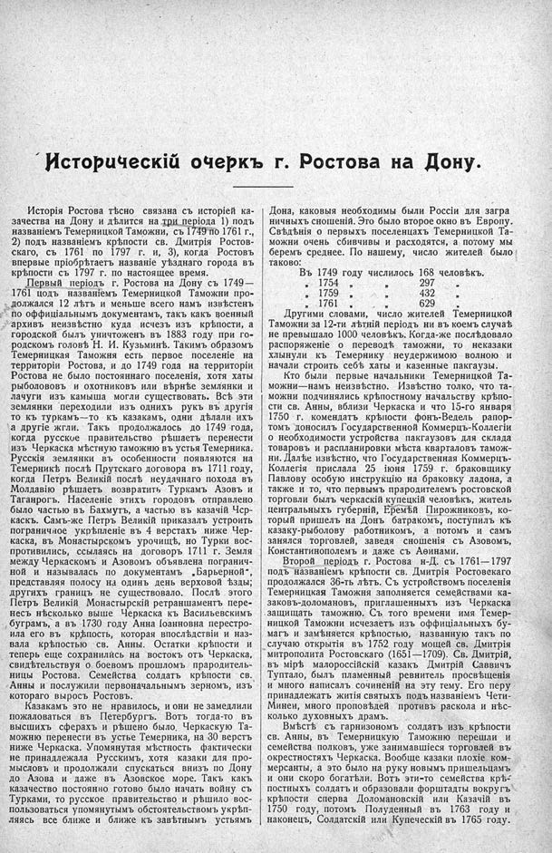

Лист источника 173
Скан

Распознанный текст
Историческій очеркъ г. Ростова на Дону.
Исторія Ростова тѣсно связана съ исторіей ка-
зачества на Дону и дѣлится на три періода 1) подъ
названіемъ Темерницкой Таможни, съ 1749 по 1761 г.,
2) подъ названіемъ крѣпости св. Дмитрія Ростов-
скаго, съ 1761 по 1797 г. и, 3), когда Ростовъ
впервые пріобрѣтаетъ названіе уѣзднаго города въ
крѣпости съ 1797 г. по настоящее время.
Первый періодъ г. Ростова на Дону съ 1749—
1761 подъ названіемъ Темерницкой Таможни про-
должался 12 лѣтъ и меньше всего намъ извѣстенъ
по оффиціальнымъ документамъ, такъ какъ военный
архивъ неизвѣстно куда исчезъ изъ крѣпости, а
городской былъ уничтоженъ въ 1883 году при го-
родскомъ головѣ Н. И. Кузьминѣ. Такимъ образомъ
Темерницкая Таможня есть первое поселеніе на
территоріи Ростова, и до 1749 года на территоріи
Ростова не было постояннаго поселенія, хотя хаты
рыболововъ и охотниковъ или вѣрнѣе землянки и
лачуги изъ камыша могли существовать. Всѣ эти
землянки переходили изъ однихъ рукъ въ другія
то къ туркамъ—то къ казакамъ, одни дѣлали ихъ
а другіе жгли. Такъ продолжалось до 1749 года,
когда русское правительство рѣшаетъ перенести
изъ Черкаска мѣстную таможню въ устья Темерника.
Русскія землянки въ особенности появляются на
Темерникѣ послѣ Прутскаго договора въ 1711 году,
когда Петръ Великій послѣ неудачнаго похода въ
Молдавію рѣшаетъ возвратить Туркамъ Азовъ и
Таганрогъ. Населеніе этихъ городовъ отправлено
было частью въ Бахмутъ, а частью въ казачій Чер-
каскъ. Самъ-же Петръ Великій приказалъ устроить
пограничное укрѣпленіе въ 4 верстахъ ниже Чер-
каска, въ Монастырскомъ урочищѣ, но Турки вос-
противились, ссылаясь на договоръ 1711 г. Земля
между Черкаскомъ и Азовомъ объявлена погранич-
ной и называлась по документамъ „Барьерной“,
представляя полосу на одинъ день верховой ѣзды;
другихъ границъ не существовало. Послѣ этого
Петръ Великій Монастырскій ретраншаментъ пере-
несъ нѣсколько выше Черкаска къ Васильевскимъ
буграмъ, а въ 1730 году Анна Іоанновна перестро-
ила его въ крѣпость, которая впослѣдствіи и наз-
вала крѣпостью св. Анны. Остатки крѣпости и
теперь еще сохранились на востокъ отъ Черкаска,
свидѣтельствуя о боевомъ прошломъ прародитель-
ницы Ростова. Семейства солдатъ крѣпости св.
Анны и послужили первоначальнымъ зерномъ, изъ
котораго выросъ Ростовъ.
Казакамъ это не нравилось, и они не замедлили
пожаловаться въ Петербургъ. Вотъ тогда-то въ
высшихъ сферахъ и рѣшено было, Черкаскую Та-
можню перенести въ устье Темерника, на 30 верстъ
ниже Черкаска. Упомянутая мѣстность фактически
не принадлежала Русскимъ, хотя казаки для про-
мысловъ и продолжали спускаться внизъ по Дону
до Азова и даже въ Азовское море. Такъ какъ
казачество постоянно готово было начать войну съ
Турками, то русское правительство и рѣшило вос-
пользоваться упомянутымъ обстоятельствомъ укрѣп-
ляясь все ближе и ближе къ завѣтнымъ устьямъ
Дона, каковыя необходимы были Россіи для загра
ничныхъ сношеній. Это было второе окно въ Европу.
Свѣдѣнія о первыхъ поселенцахъ Темерницкой Та-
можни очень сбивчивы и расходятся, а потому мы
беремъ среднее. По нашему, число жителей было
таково:
Въ 1749 году числилось 168 человѣкъ.
„ 1754 „ „ 297 „
„ 1759 „ „ 432 „
„ 1761 „ „ 629 „
Другими словами, число жителей Темерницкой
Таможни за 12-ти лѣтній періодъ ни въ коемъ случаѣ
не превышало 1000 человѣкъ. Когда-же послѣдовало
распоряженіе о переводѣ таможни, то неказаки
хлынули къ Темернику неудержимою волною и
начали строить себѣ хаты и казенные пакгаузы.
Кто были первые начальники Темерницкой Та-
можни—намъ неизвѣстно. Извѣстно толко, что та-
можни подчинялись крѣпостному начальству крѣпо-
сти св. Анны, вблизи Черкаска и что 15-го января
1750 г. комендатъ крѣпости фонъ-Ведель рапор-
томъ доносилъ Государственной Коммерцъ-Коллегіи
о необходимости устройства пакгаузовъ для склада
товаровъ и распланировки мѣста кварталовъ тамож-
ни. Далѣе извѣстно, что Государственная Коммерцъ-
Коллегія прислала 25 іюня 1759 г. браковщику
Павлову особую инструкцію на браковку ладона, а
также и то, что первымъ прародителемъ ростовской
торговли былъ черкаскій купецкій человѣкъ, житель
центральныхъ губерній, Еремѣй Пирожниковъ, ко-
торый пришелъ на Донъ батракомъ, поступилъ къ
казаку-рыболову работникомъ, а потомъ и самъ
занялся торговлей, заведя сношенія съ Азовомъ,
Константинополемъ и даже съ Аѳинами.
Второй періодъ г. Ростова н-Д. съ 1761—1797
подъ названіемъ крѣпости св. Дмитрія Ростовскаго
продолжался 36-ть лѣтъ. Съ устройствомъ поселенія
Темерницкая Таможня заполняется семействами ка-
заковъ-доломановъ, приглашенныхъ изъ Черкаска
защищать таможню. Съ того времени имя Темер-
ницкой Таможни исчезаетъ изъ оффиціальныхъ бу-
магъ и замѣняется крѣпостью, названную такъ по
случаю открытія въ 1752 году мощей св. Дмитрія
митрополита Ростовскаго (1651—1709). Св. Дмитрій,
въ мірѣ малороссійскій казакъ Дмитрій Саввичъ
Туптало, былъ пламенный ревнитель просвѣщенія
и много написалъ сочиненій на эту тему. Его перу
принадлежатъ житія святыхъ подъ названіемъ Чети-
Минеи, много проповѣдей противъ раскола и нѣс-
колько духовныхъ драмъ.
Вмѣстѣ съ гарнизономъ солдатъ изъ крѣпости
св. Анны, въ Темерницкую Таможню перешли и
семейства полковъ, уже занимавшіеся торговлей въ
окрестностяхъ Черкаска. Вообще казаки плохіе ком-
мерсанты, а это было на руку новымъ пришельцамъ
и они скоро богатѣли. Вотъ эти-то семейства крѣ-
постныхъ солдатъ и образовали форштадты вокругъ
крѣпости сперва Доломановскій или Казачій въ
1750 году, потомъ Полуденный въ 1763 году и
наконецъ, Солдатскій или Купеческій въ 1765 году.